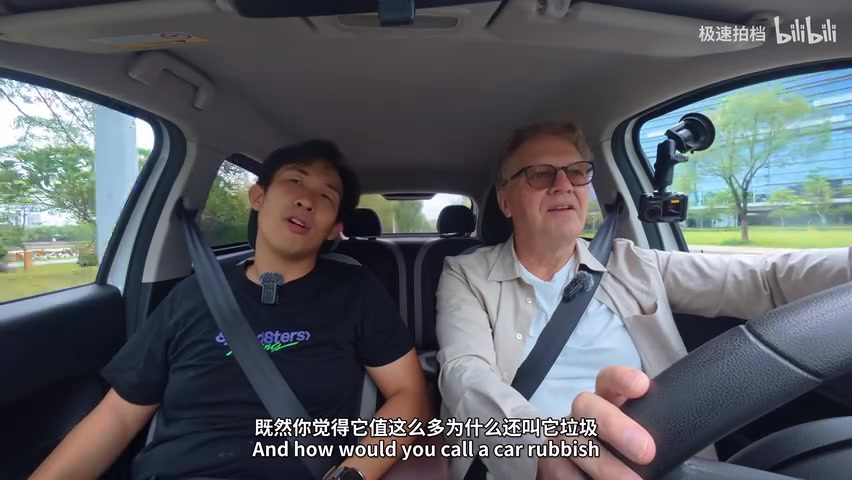
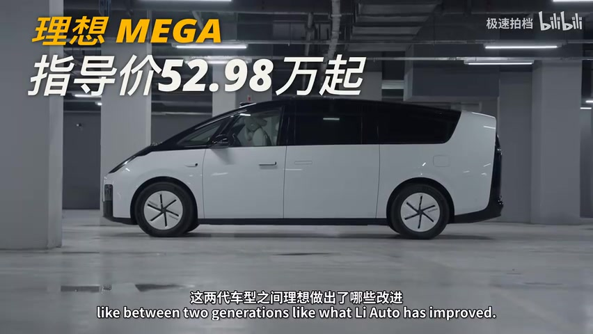
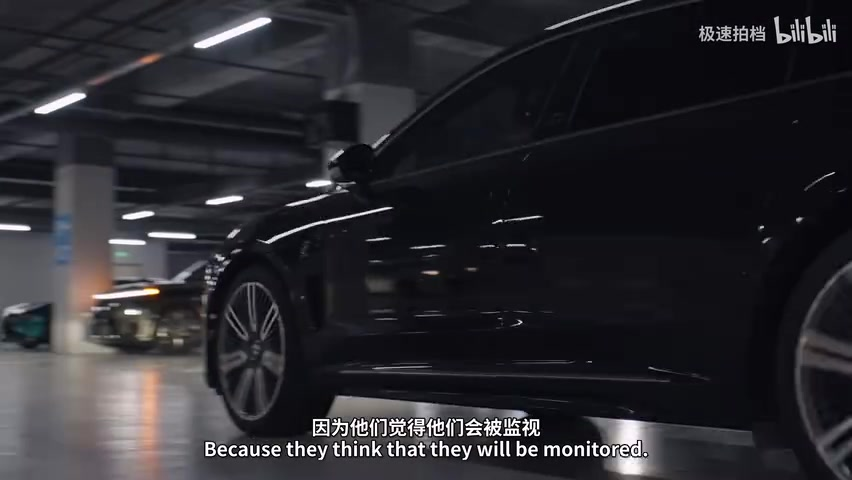
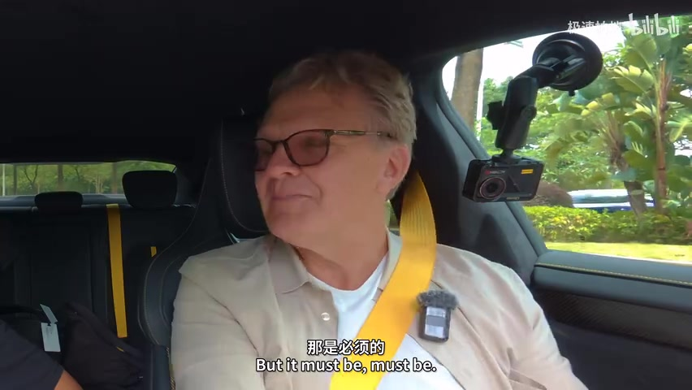
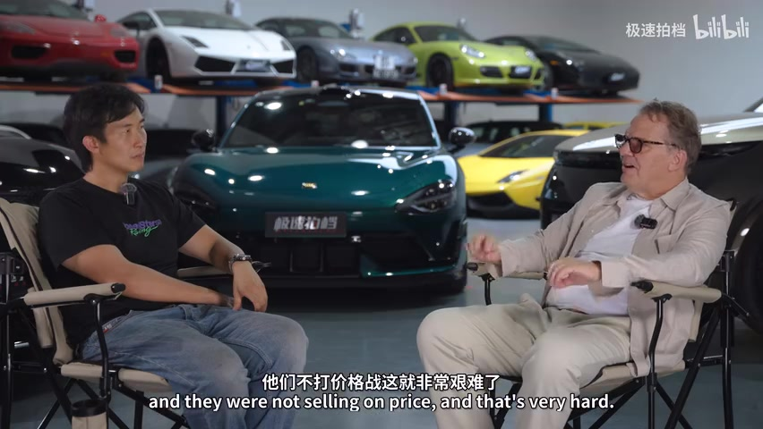
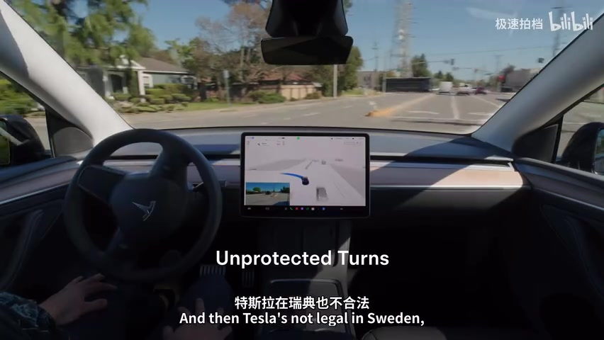
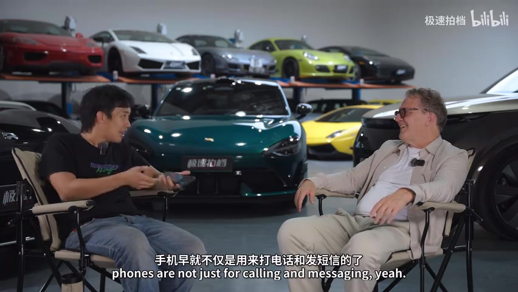
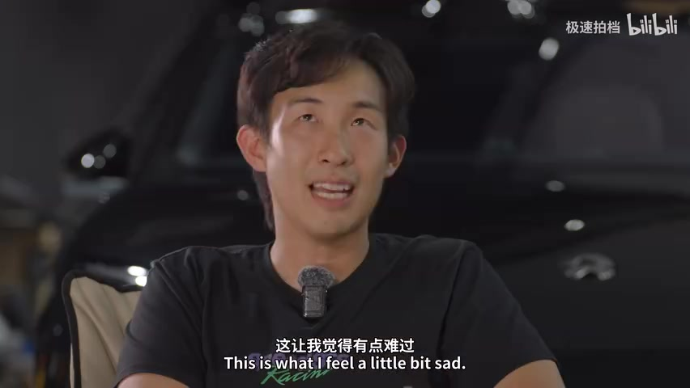

01
中文
其实以前中国车在外国人心目中形象是很一般的。
EN
Honestly, Chinese cars used to have a pretty mediocre reputation abroad.
表达提示a mediocre reputation（形象很一般）；abroad（在外国）

Scene English · 汽车观察 · 中国车全球变局
How Chinese Cars Made Europe Nervous | Driving Chinese EVs with a Swedish Journalist
🎧 语音讲解
Opening: One Car Changed the Image
情境UP主说出国参加媒体活动10年，最早外国人对中国车的印象只是便宜、山寨、不安全。但一台车的出现改变了这一切——苏奇Altra在纽伯格林打败保时捷之后，欧洲人真的有点慌。语域：口播叙述，引出主题。
其实以前中国车在外国人心目中形象是很一般的。
Honestly, Chinese cars used to have a pretty mediocre reputation abroad.
表达提示a mediocre reputation（形象很一般）；abroad（在外国）
最早的时候他们只是觉得中国车还不就是便宜、山寨、不安全。
Early on, they just thought Chinese cars were nothing but cheap, copied, and unsafe.
表达提示nothing but cheap（不就是便宜）；copied（山寨）
它在纽伯格林打败了保时捷之后，欧洲人是真的有点慌。
After it beat Porsche at the Nürburgring, Europeans genuinely started to panic.
表达提示beat Porsche（打败保时捷）；start to panic（有点慌）
形象很一般 → a mediocre reputation / not much of an image
真的有点慌 → genuinely started to panic / got really worried

The Guest: Swedish Auto Journalist Orex
情境今天迎来重要嘉宾Orex，瑞典最知名资历最深的汽车媒体人。在宝马活动上认识，他问新的i3应该卖多少钱，UP主说20多万，他感叹那就是欧洲的半价。这次他来中国，就是要看看中国车是不是真的「遥遥领先」。语域：口播+对话，介绍嘉宾。
他觉得新的i3应该卖多少钱？我说卖20多万，他说那不就是欧洲的半价。
What did he think the new i3 should cost? I said around 200k yuan — he said that's basically half the European price.
表达提示half the European price（欧洲的半价）
他问我说你觉得新的i3应该卖多少钱呢。
He asked me how much I thought the new i3 should be sold for.
表达提示be sold for（卖多少钱）
这一次他过来中国的目的很简单，就是要看一下中国车是不是真的遥遥领先。
His purpose in coming to China this time was simple — to see whether Chinese cars are truly far ahead.
表达提示far ahead（遥遥领先）；his purpose（他的目的）
欧洲的半价 → half the European price / half of what it costs in Europe
遥遥领先 → truly far ahead / way out in front

The Chinese Car Image Seven Years Ago
情境先给嘉宾看七年前的第一代中国车，Orex回忆：2006-2007年中国车在欧洲2000欧元，像山寨宝马X5的COPCAT，中国车的形象被伤害了。他也分享欧洲最便宜的电车是零跑T03，2万欧元。语域：双语对话，回忆对比。
在瑞典最便宜的电动车是零跑T03，2万欧元，比今天的T03还贵。
The cheapest EV in Sweden is the Leapmotor T03 at 20,000 euros — more than today's T03.
表达提示the cheapest EV（最便宜的电车）；more than（比…更贵）
2006、2007年中国车只要2000欧元，但中国车的形象也被这种车伤害了。
Back in 2006 and 2007, Chinese cars cost just 2,000 euros — but cars like that also hurt the image of Chinese cars.
表达提示hurt the image（伤害形象）；back in（早在…）
它看起来像宝马X5的山寨版，你会认为是奔驰车，但它不是。
It looks like a knockoff BMW X5 — you'd think it was a Mercedes, but it's not.
表达提示a knockoff（山寨版）；you'd think（你会以为）
山寨版 → a knockoff / a clone
伤害形象 → hurt the image / damage the reputation

The Cheapest Fun: Wuling
情境试驾五菱微型电车。Orex感叹：中国车7年后变得很可爱，这是欧洲最便宜的电动车但感觉太弱。关键点：同平台的吉利车只要8000元，比欧洲T03的2万欧元便宜太多，你花了一点钱但得了更多。语域：双语对话，试驾体验。
7年后这个车变成了什么样？这看起来很可爱。
Seven years later, what has this kind of car become? It looks adorable.
表达提示adorable（可爱）；what has it become（变成了什么）
同平台的吉利车只要8000元，所以你明白为什么这个车很棒。
The Geely version on the same platform costs just 8,000 yuan — so you see why it's a great car.
表达提示on the same platform（同平台）；a great car（很棒的车）
你花了一点钱，但你还得到了更多。
You spend a little money, but you get a lot more back.
表达提示get a lot more back（得到更多）
很可爱 → adorable / cute
花小钱得更多 → spend little, get more back / great value for money

Going Premium: The Mega and the L9
情境进入欧洲没有售卖的高价区。极氪Mega设计很大、像高速车，Li Auto L9 的亮点是中间放了个桌子——中国人把车当第二居所，这是传统。语域：双语对话，点评设计。
Mega看起来很大，在高速路上像一台高速列车。
The Mega looks huge — on the highway it's like a high-speed train.
表达提示high-speed train（高速列车）
中国人用车作为第二居所的房间，这就是传统，放了一整个桌子在中间。
The Chinese use their car as a second living room — it's tradition, with a whole table in the middle.
表达提示a second living room（第二居所）；a whole table（整张桌子）
它的价值是半价的，但车型的感觉和传统感我真的很爱。
It costs half as much, but the vibe and the sense of tradition — I really love it.
表达提示half as much（半价）；the sense of tradition（传统感）
第二居所 → a second living room / a home away from home
传统感 → the sense of tradition / tradition and heritage

Performance Beasts: 900 to 1000 Horsepower
情境试驾900匹马力的纯电和1000匹的插混。Orex说它的驾驶感超过马力数字本身，价格是半价但力量比Turbo GT更多。提到品牌创始人买了大量Benchmark车：GT2 RS、法拉利、Lotus Eletra、Supra——测试每一台然后做「对的」车。语域：双语对话，试驾惊叹。
这是一台900马力的车，后面那台是1000马力，超过1000马力是新的。
This one has 900 horsepower — the one behind has 1000, and over 1000 is the new one.
表达提示horsepower（马力）；the new one（新款）
它的驾驶体验超过马力数字本身，价格是半价但力量比Turbo GT更多。
The driving experience is about more than the horsepower numbers — it costs half the price yet delivers more punch than a Turbo GT.
表达提示more than the numbers（超过数字本身）；more punch（力量更多）
他们买了一堆标杆车，GT2 RS、法拉利、Lotus Eletra、Supra，测试每一台然后做一台「对的」车。
They bought a bunch of benchmark cars — the GT2 RS, a Ferrari, a Lotus Eletra, a Supra — test every one, then build the 'right' car.
表达提示benchmark cars（标杆车）；build the right car（做对的车）
性能猛兽 → performance beast / an absolute monster
超过马力本身 → more than its horsepower / beyond the numbers

The European Market: The Price and Perception Gap
情境聊欧洲市场：中国车30万欧元在瑞典也有30万，很多人仍怀疑。MG是第一个进入欧洲的中国品牌，BYD也在尝试但不太有存在感。品牌认知是最难的：NIO、小鹏没有价格优势。高端车像蔚来ES9、ET9在欧洲是小众市场——花大钱买的车，人们会承认你。语域：双语对话，市场分析。
MG是第一个进入欧洲的中国品牌，而BYD又在试，但不太有存在感。
MG was the first Chinese brand in Europe, and BYD is trying again — but it doesn't have much presence.
表达提示have much presence（有存在感）；the first Chinese brand（第一个中国品牌）
品牌认知是最难的，因为价格很重要。
Brand recognition is the hardest part, because price matters a lot.
表达提示brand recognition（品牌认知）；price matters（价格很重要）
如果你花了很多钱买一台车，你愿意别人承认你，你不想解释为什么买它。
If you spend a lot of money on a car, you want recognition — you don't want to explain why you bought it.
表达提示want recognition（想要被承认）；explain why（解释原因）
有存在感 → have presence / make a mark
品牌认知 → brand recognition / brand awareness

Ending: Europe Needs Good Competition
情境结尾英文对话：欧洲车企面临困境，没有看到汽车产业的巨大飞跃。竞争让产业前进，欧洲必须选择一条技术路线，不能同时开发两条。小米在电驱追赶保时捷，美国用燃油V8追赶。希望看到更多合作，好的车、低的价格，让品牌核心价值回归。语域：英文对话，真挚展望。
近年来，我没有看到欧洲汽车产业的焦点，也没看到真正的巨大进步或飞跃。
In recent years, I don't see the focus of the European car industry, and you don't see a really huge improvement or leap forward.
表达提示a leap forward（飞跃）；the focus of the industry（产业的焦点）
好的竞争是推动汽车产业前进的东西。
Good competition is what makes the car industry move forward.
表达提示make the industry move forward（推动产业前进）
我们的目标是拥有低价的好车，让品牌的核心价值回归。
The goal is to have good cars at low prices — and let the core value of brands come back.
表达提示good cars at low prices（低价好车）；core value（核心价值）
竞争推动产业 → competition moves the industry forward / good competition breeds progress
品牌价值回归 → brand core values come back / brand identity returns
说一台车让形象改变
说中国车现在不同了
说品牌难进新市场
说竞争推动产业
中文「20万」直接音译不合语法；英文用 200,000 yuan 或 200k。
image 用于「形象」可以，但 reputation（声誉）更准确；very ordinary 略贬，mediocre 更贴合语境。
the price of Europe's half 是中式直译；half the European price 才是自然表达。
have no focus 是静态描述；lost its focus（失去焦点/方向）更符合「近年没看到焦点」的语感。